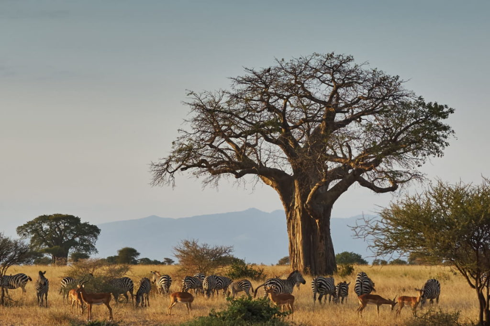
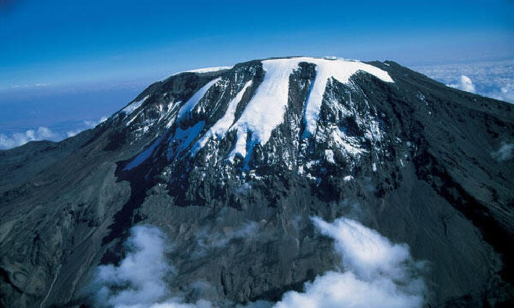

Serengeti Migration Journey
Follow Tanzania’s celebrated wildlife circuit through Tarangire, Ngorongoro and the Serengeti.
Indicative from USD 6,450 per personPlan this safari →Private Tanzania journeys
Explore Tanzania through a private safari shaped around your interests, travel dates, preferred accommodation and pace.
Welcome to Geo Safaris
Every safari begins with a conversation. We learn what you want to see, how you prefer to travel and what will make the journey meaningful for you.
From wildlife-rich national parks to Kilimanjaro and Zanzibar, we combine local knowledge with practical planning to create a smooth private journey.

Featured journeys
These sample safaris are starting points. Dates, stays, pace and activities can be adjusted to suit you.
Follow Tanzania’s celebrated wildlife circuit through Tarangire, Ngorongoro and the Serengeti.
Indicative from USD 6,450 per personPlan this safari →
Combine the Ngorongoro Crater with Tarangire’s elephant herds and ancient baobabs.
Indicative from USD 4,200 per personPlan this safari →
Pair an immersive wildlife safari with time to rest beside the Indian Ocean.
Indicative from USD 9,800 per personPlan this safari →Why travel with us
A well-planned safari should feel exciting before you arrive and easy once you are here.
Your itinerary reflects your interests, comfort, time and preferred pace.
Local planning helps match destinations with the right season and route.
You receive practical guidance and direct support throughout the process.
We favour respectful wildlife experiences and locally connected partners.
Where will you go?
Build your journey around wildlife, mountains, culture, beaches or a combination of them all.

Endless plains and seasonal wildlife movement.

Elephant country, river valleys and baobabs.

Africa’s highest mountain and a defining challenge.
Your journey starts here